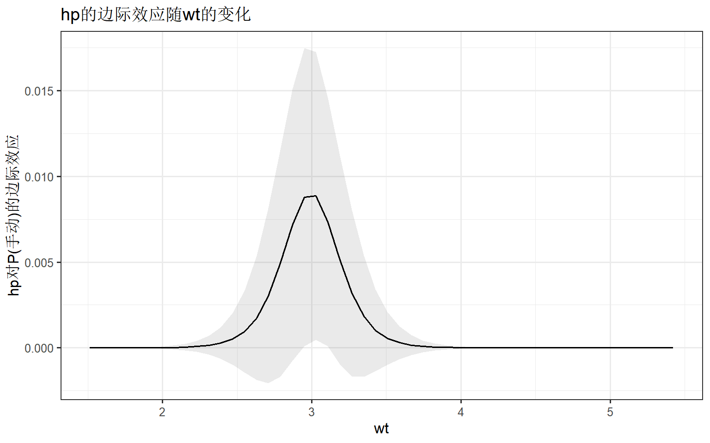
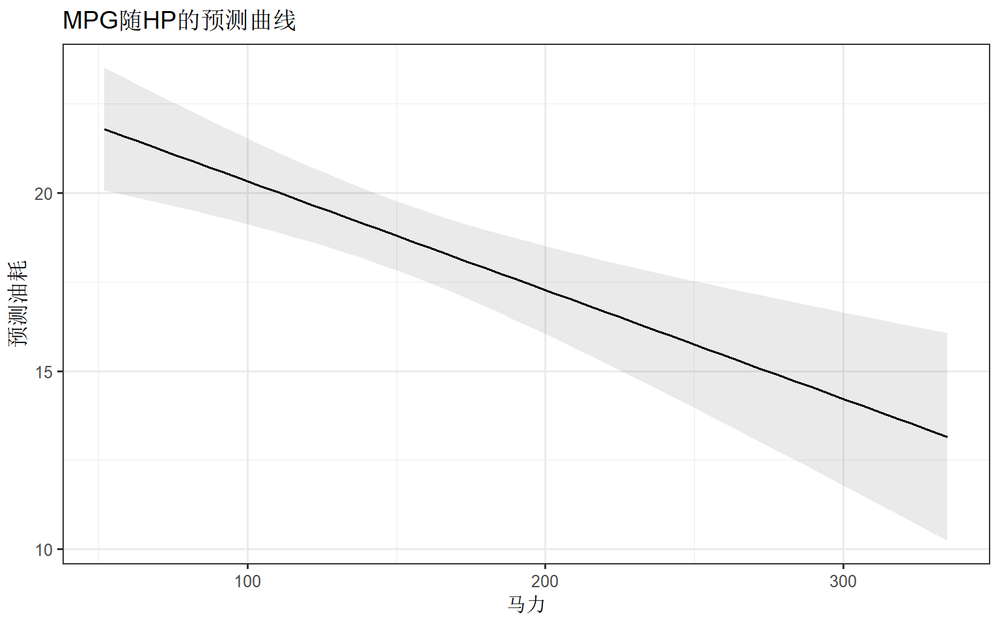
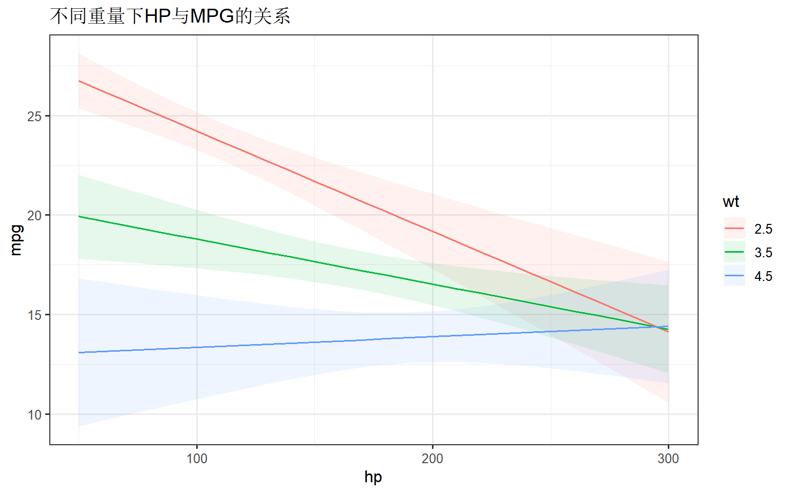
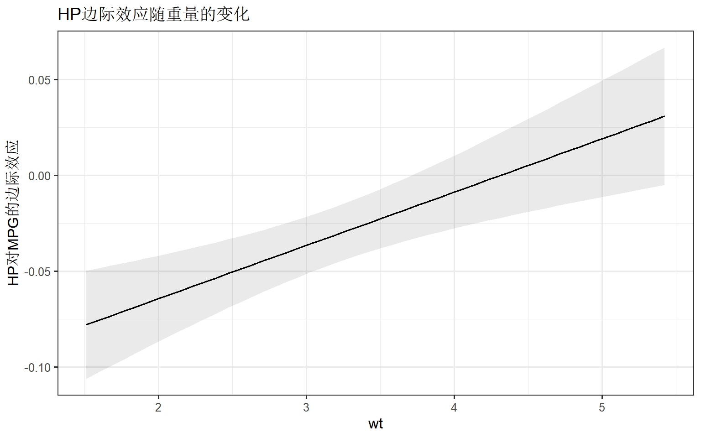
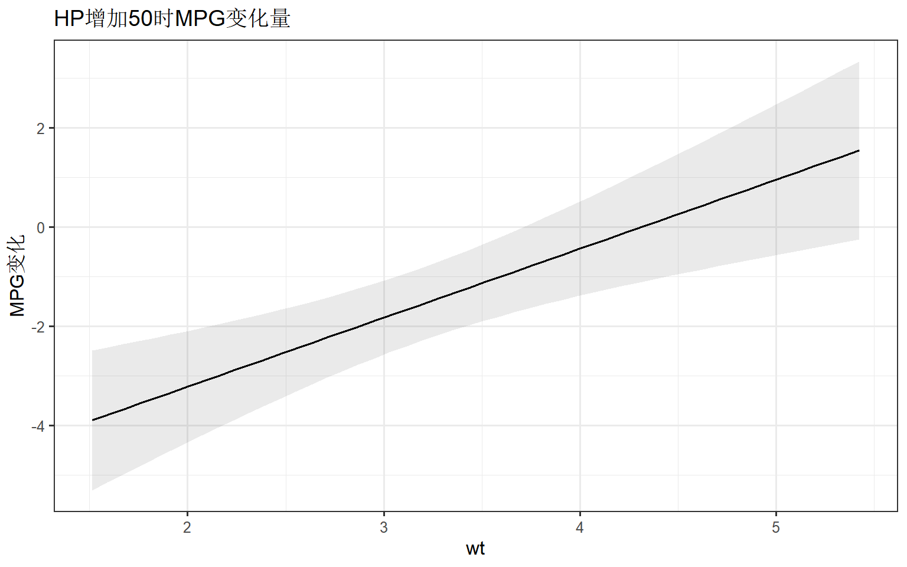
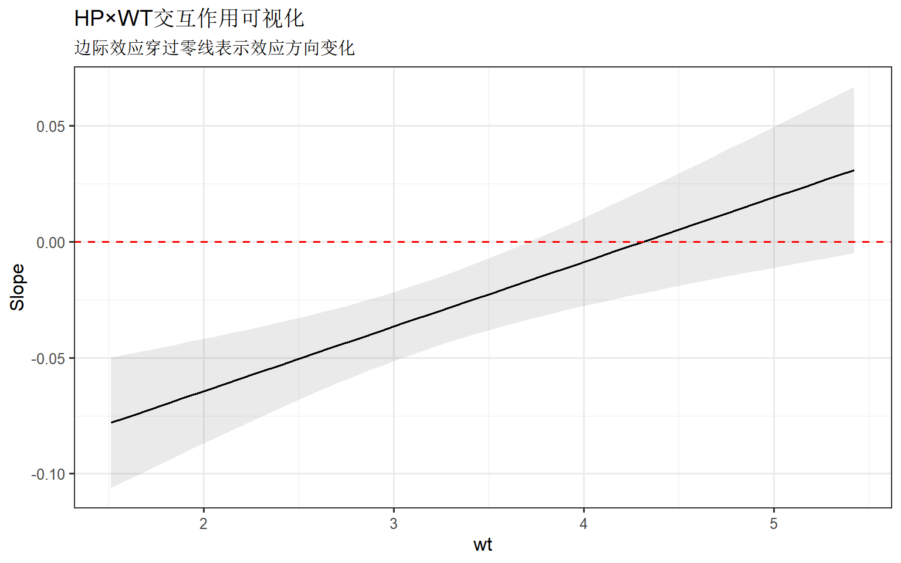
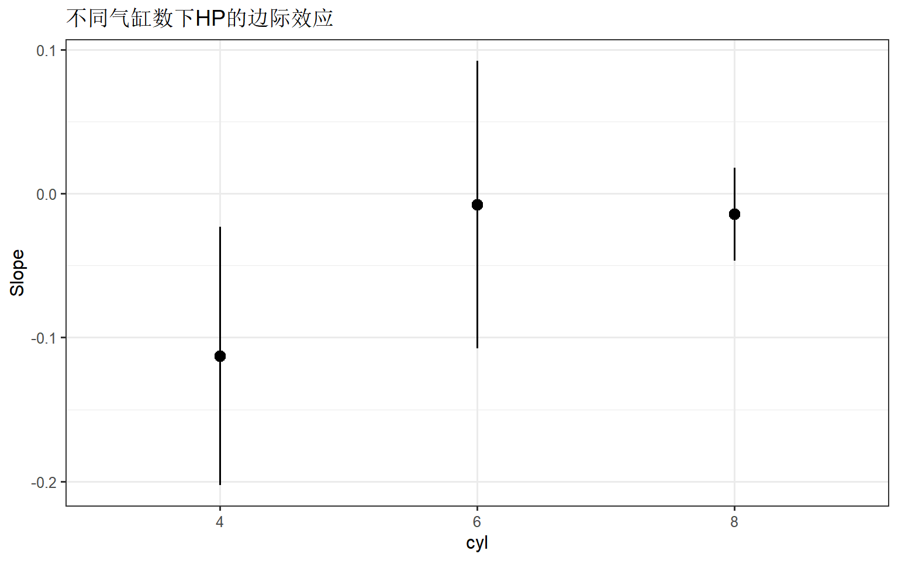
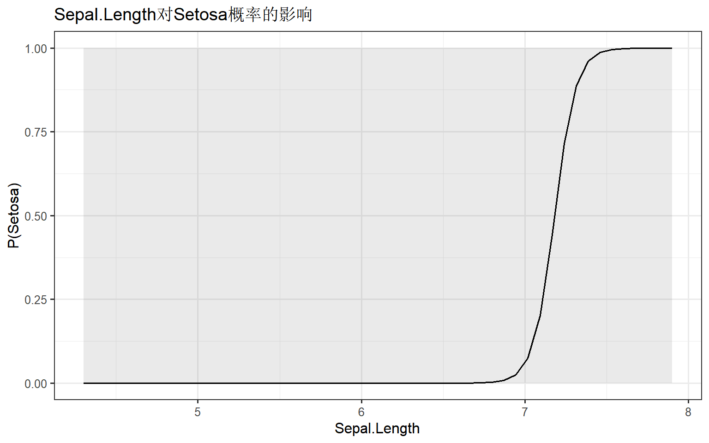
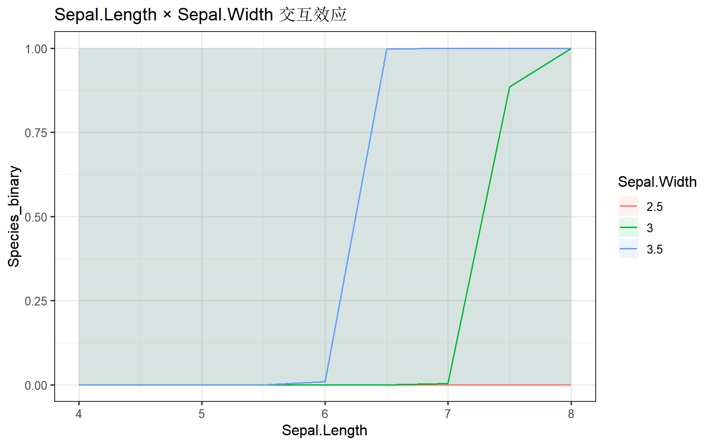

library(marginaleffects)
library(ggplot2)
library(dplyr)
theme_set(theme_bw(base_size = 12))marginaleffects 边际效应分析完全指南
实用R包
模型解释
边际效应
marginaleffects 简介
marginaleffects 是R语言中最强大的模型解释工具包，支持100+类统计和机器学习模型的边际效应、预测值和对比分析。
为什么需要边际效应？
回归系数告诉我们变量的”平均”效应，但在以下情况下不够直观： - 非线性模型：Logistic回归的系数是对数几率比，难以解释 - 交互作用：效应随其他变量变化 - 复杂模型：GAM、混合模型等
核心功能
| 函数 | 功能 | 应用场景 |
|---|---|---|
predictions() |
计算预测值 | 各水平的期望结果 |
slopes() |
计算边际效应 | 变量增加一单位的效应 |
comparisons() |
计算对比 | 组间差异、风险比 |
plot_*() |
可视化 | 效应图、预测曲线 |
安装与加载
第一部分：predictions() 预测值
predictions() 用于计算模型在特定条件下的预测值。
基础用法
# 拟合Logistic回归
data(mtcars)
mtcars$am <- factor(mtcars$am, labels = c("自动", "手动"))
model <- glm(am ~ hp + wt, data = mtcars, family = binomial)
# 计算每个观测的预测概率
pred <- predictions(model)
head(pred)
Estimate Pr(>|z|) S 2.5 % 97.5 %
0.84234 0.1546 2.7 3.47e-01 0.982
0.40478 0.6991 0.5 8.78e-02 0.828
0.97024 0.0436 4.5 5.25e-01 0.999
0.04173 0.0422 4.6 2.11e-03 0.472
0.06939 0.0482 4.4 5.64e-03 0.495
0.00499 0.0185 5.8 6.11e-05 0.292
Type: invlink(link)特定值预测
# 在特定hp和wt值下的预测
pred_grid <- predictions(model,
newdata = datagrid(
hp = c(100, 150, 200),
wt = c(2.5, 3.5)
)
)
print(pred_grid)
hp wt Estimate Pr(>|z|) S 2.5 % 97.5 %
100 2.5 0.90747 0.0949 3.4 4.02e-01 0.993
100 3.5 0.00302 0.0172 5.9 2.56e-05 0.263
150 2.5 0.98363 0.0205 5.6 6.53e-01 0.999
150 3.5 0.01821 0.0213 5.6 6.22e-04 0.356
200 2.5 0.99729 0.0154 6.0 7.55e-01 1.000
200 3.5 0.10204 0.0899 3.5 9.12e-03 0.584
Type: invlink(link)分组平均预测
# 按实际am分组的平均预测（Average Predictions）
avg_pred <- predictions(model, by = "am")
print(avg_pred)
Estimate Std. Error z Pr(>|z|) S 2.5 % 97.5 %
0.0767 0.0315 2.44 0.0148 6.1 0.015 0.138
0.8879 0.0647 13.71 <0.001 139.8 0.761 1.015
Type: response第二部分：slopes() 边际效应
slopes() 计算连续变量增加一单位时结果变量的变化量。
平均边际效应 (AME)
# 计算hp的平均边际效应
ame <- slopes(model, variables = "hp")
head(ame)
Estimate Std. Error z Pr(>|z|) S 2.5 % 97.5 %
0.00481 0.004260 1.130 0.2584 2.0 -0.003535 0.013165
0.00874 0.003836 2.277 0.0228 5.5 0.001216 0.016254
0.00105 0.001607 0.651 0.5148 1.0 -0.002103 0.004197
0.00145 0.001535 0.944 0.3451 1.5 -0.001560 0.004459
0.00234 0.002336 1.002 0.3163 1.7 -0.002237 0.006920
0.00018 0.000329 0.547 0.5845 0.8 -0.000465 0.000825
Term: hp
Type: response
Comparison: dY/dX# 汇总平均边际效应
summary(slopes(model)) rowid term contrast estimate
Min. : 1.00 Length:64 Length:64 Min. :-1.962e+00
1st Qu.: 8.75 Class :character Class :character 1st Qu.:-9.799e-02
Median :16.50 Mode :character Mode :character Median :-1.400e-07
Mean :16.50 Mean :-1.790e-01
3rd Qu.:24.25 3rd Qu.: 4.395e-04
Max. :32.00 Max. : 8.798e-03
std.error statistic p.value s.value
Min. :1.000e-08 Min. :-2.532539 Min. :0.01132 Min. :0.1948
1st Qu.:5.709e-04 1st Qu.:-0.639457 1st Qu.:0.38870 1st Qu.:0.6527
Median :4.048e-03 Median :-0.000569 Median :0.52253 Median :0.9364
Mean :1.564e-01 Mean :-0.031003 Mean :0.51014 Mean :1.2657
3rd Qu.:1.490e-01 3rd Qu.: 0.611018 3rd Qu.:0.63612 3rd Qu.:1.3633
Max. :1.323e+00 Max. : 2.276930 Max. :0.87369 Max. :6.4645
conf.low conf.high mpg cyl
Min. :-3.5180182 Min. :-0.443479 Min. :10.40 Min. :4.000
1st Qu.:-0.3888220 1st Qu.: 0.001086 1st Qu.:15.43 1st Qu.:4.000
Median :-0.0031963 Median : 0.007876 Median :19.20 Median :6.000
Mean :-0.4854919 Mean : 0.127509 Mean :20.09 Mean :6.188
3rd Qu.:-0.0007672 3rd Qu.: 0.184713 3rd Qu.:22.80 3rd Qu.:8.000
Max. : 0.0012160 Max. : 1.840334 Max. :33.90 Max. :8.000
disp hp drat wt
Min. : 71.1 Min. : 52.0 Min. :2.760 Min. :1.513
1st Qu.:120.8 1st Qu.: 96.5 1st Qu.:3.080 1st Qu.:2.581
Median :196.3 Median :123.0 Median :3.695 Median :3.325
Mean :230.7 Mean :146.7 Mean :3.597 Mean :3.217
3rd Qu.:326.0 3rd Qu.:180.0 3rd Qu.:3.920 3rd Qu.:3.610
Max. :472.0 Max. :335.0 Max. :4.930 Max. :5.424
qsec vs am gear carb
Min. :14.50 Min. :0.0000 自动:38 Min. :3.000 Min. :1.000
1st Qu.:16.89 1st Qu.:0.0000 手动:26 1st Qu.:3.000 1st Qu.:2.000
Median :17.71 Median :0.0000 Median :4.000 Median :2.000
Mean :17.85 Mean :0.4375 Mean :3.688 Mean :2.812
3rd Qu.:18.90 3rd Qu.:1.0000 3rd Qu.:4.000 3rd Qu.:4.000
Max. :22.90 Max. :1.0000 Max. :5.000 Max. :8.000
predicted_lo predicted_hi predicted
Min. :3.000e-08 Min. :3.000e-08 Min. : NA
1st Qu.:9.074e-03 1st Qu.:9.065e-03 1st Qu.: NA
Median :5.557e-02 Median :5.552e-02 Median : NA
Mean :4.063e-01 Mean :4.062e-01 Mean :NaN
3rd Qu.:9.435e-01 3rd Qu.:9.435e-01 3rd Qu.: NA
Max. :1.000e+00 Max. :1.000e+00 Max. : NA
NA's :64 特定值边际效应 (MEM)
# 在特定wt值下hp的边际效应
mem <- slopes(model,
variables = "hp",
newdata = datagrid(wt = c(2, 3, 4))
)
print(mem)
wt Estimate Std. Error z Pr(>|z|) S 2.5 % 97.5 %
2 1.18e-05 3.33e-05 0.354 0.7230 0.5 -5.35e-05 7.71e-05
3 9.06e-03 4.42e-03 2.051 0.0402 4.6 4.03e-04 1.77e-02
4 1.06e-05 3.01e-05 0.351 0.7253 0.5 -4.85e-05 6.96e-05
Term: hp
Type: response
Comparison: dY/dX边际效应可视化
# 边际效应如何随wt变化
plot_slopes(model, variables = "hp", condition = "wt") +
labs(
title = "hp的边际效应随wt的变化",
y = "hp对P(手动)的边际效应"
)
第三部分：comparisons() 对比分析
comparisons() 用于计算不同水平或条件之间的差异。
连续变量对比
# hp从100到200的效应差异
comp <- comparisons(model,
variables = list(hp = c(100, 200))
)
print(comp)
Estimate Std. Error z Pr(>|z|) S 2.5 % 97.5 %
0.204847 0.187262 1.094 0.2740 1.9 -0.162179 0.571873
0.625491 0.244655 2.557 0.0106 6.6 0.145976 1.105006
0.022610 0.038673 0.585 0.5588 0.8 -0.053186 0.098407
0.502805 0.238095 2.112 0.0347 4.8 0.036147 0.969463
0.150919 0.147271 1.025 0.3055 1.7 -0.137727 0.439565
--- 22 rows omitted. See ?print.marginaleffects ---
0.000034 0.000136 0.249 0.8031 0.3 -0.000233 0.000301
0.578990 0.235093 2.463 0.0138 6.2 0.118217 1.039763
0.451345 0.255647 1.766 0.0775 3.7 -0.049713 0.952404
0.058905 0.078067 0.755 0.4505 1.2 -0.094104 0.211914
0.469603 0.256714 1.829 0.0674 3.9 -0.033548 0.972754
Term: hp
Type: response
Comparison: 200 - 100单位变化对比
# hp每增加10单位的效应
comp_10 <- comparisons(model,
variables = list(hp = 10)
) # 变化10单位
summary(comp_10) rowid term contrast estimate
Min. : 1.00 Length:32 Length:32 Min. :1.500e-08
1st Qu.: 8.75 Class :character Class :character 1st Qu.:1.193e-03
Median :16.50 Mode :character Mode :character Median :5.725e-03
Mean :16.50 Mean :1.611e-02
3rd Qu.:24.25 3rd Qu.:1.695e-02
Max. :32.00 Max. :8.946e-02
std.error statistic p.value s.value
Min. :9.400e-08 Min. :0.1605 Min. :0.02962 Min. :0.1968
1st Qu.:2.578e-03 1st Qu.:0.4729 1st Qu.:0.36647 1st Qu.:0.6527
Median :8.065e-03 Median :0.6152 Median :0.53846 Median :0.8933
Mean :1.533e-02 Mean :0.7115 Mean :0.51420 Mean :1.1689
3rd Qu.:2.225e-02 3rd Qu.:0.9040 3rd Qu.:0.63645 3rd Qu.:1.4514
Max. :6.459e-02 Max. :2.1752 Max. :0.87246 Max. :5.0774
conf.low conf.high mpg cyl
Min. :-0.062123 Min. :1.990e-07 Min. :10.40 Min. :4.000
1st Qu.:-0.019008 1st Qu.:6.183e-03 1st Qu.:15.43 1st Qu.:4.000
Median :-0.008955 Median :2.153e-02 Median :19.20 Median :6.000
Mean :-0.013935 Mean :4.616e-02 Mean :20.09 Mean :6.188
3rd Qu.:-0.003283 3rd Qu.:5.973e-02 3rd Qu.:22.80 3rd Qu.:8.000
Max. : 0.008851 Max. :2.001e-01 Max. :33.90 Max. :8.000
disp hp drat wt
Min. : 71.1 Min. : 52.0 Min. :2.760 Min. :1.513
1st Qu.:120.8 1st Qu.: 96.5 1st Qu.:3.080 1st Qu.:2.581
Median :196.3 Median :123.0 Median :3.695 Median :3.325
Mean :230.7 Mean :146.7 Mean :3.597 Mean :3.217
3rd Qu.:326.0 3rd Qu.:180.0 3rd Qu.:3.920 3rd Qu.:3.610
Max. :472.0 Max. :335.0 Max. :4.930 Max. :5.424
qsec vs am gear carb
Min. :14.50 Min. :0.0000 自动:19 Min. :3.000 Min. :1.000
1st Qu.:16.89 1st Qu.:0.0000 手动:13 1st Qu.:3.000 1st Qu.:2.000
Median :17.71 Median :0.0000 Median :4.000 Median :2.000
Mean :17.85 Mean :0.4375 Mean :3.688 Mean :2.812
3rd Qu.:18.90 3rd Qu.:1.0000 3rd Qu.:4.000 3rd Qu.:4.000
Max. :22.90 Max. :1.0000 Max. :5.000 Max. :8.000
predicted_lo predicted_hi predicted
Min. :3.000e-08 Min. :5.000e-08 Min. : NA
1st Qu.:9.074e-03 1st Qu.:1.299e-02 1st Qu.: NA
Median :5.556e-02 Median :7.783e-02 Median : NA
Mean :4.062e-01 Mean :4.224e-01 Mean :NaN
3rd Qu.:9.435e-01 3rd Qu.:9.600e-01 3rd Qu.: NA
Max. :1.000e+00 Max. :1.000e+00 Max. : NA
NA's :32 风险比和优势比
# 计算优势比 (Odds Ratio)
or <- comparisons(model,
variables = "hp",
comparison = "lnratioavg", # 对数优势比
transform = exp
) # 转换为优势比
summary(or) term contrast estimate p.value
Length:1 Length:1 Min. :1.004 Min. :0.007114
Class :character Class :character 1st Qu.:1.004 1st Qu.:0.007114
Mode :character Mode :character Median :1.004 Median :0.007114
Mean :1.004 Mean :0.007114
3rd Qu.:1.004 3rd Qu.:0.007114
Max. :1.004 Max. :0.007114
s.value conf.low conf.high
Min. :7.135 Min. :1.001 Min. :1.007
1st Qu.:7.135 1st Qu.:1.001 1st Qu.:1.007
Median :7.135 Median :1.001 Median :1.007
Mean :7.135 Mean :1.001 Mean :1.007
3rd Qu.:7.135 3rd Qu.:1.001 3rd Qu.:1.007
Max. :7.135 Max. :1.001 Max. :1.007 第四部分：可视化功能
预测曲线
# 线性回归示例
model_lm <- lm(mpg ~ hp * wt, data = mtcars)
# 预测曲线
plot_predictions(model_lm, condition = "hp") +
labs(
title = "MPG随HP的预测曲线",
x = "马力", y = "预测油耗"
)
条件预测曲线
# 按wt分组的预测曲线
plot_predictions(model_lm,
condition = list(hp = seq(50, 300, 10), wt = c(2.5, 3.5, 4.5))
) +
labs(title = "不同重量下HP与MPG的关系")
边际效应图
# 边际效应随条件变化
plot_slopes(model_lm,
variables = "hp",
condition = "wt"
) +
labs(
title = "HP边际效应随重量的变化",
y = "HP对MPG的边际效应"
)
对比可视化
# 对比可视化
plot_comparisons(model_lm,
variables = list(hp = 50), # HP增加50
condition = "wt"
) +
labs(
title = "HP增加50时MPG变化量",
y = "MPG变化"
)
第五部分：与GLM模型结合
Logistic回归
# 二分类模型
data(mtcars)
model_logit <- glm(vs ~ hp + wt + am, data = mtcars, family = binomial)
# 预测概率
predictions(model_logit, type = "response") |> head()
Estimate Std. Error z Pr(>|z|) S 2.5 % 97.5 %
0.2674 0.2243 1.192 0.233 2.1 -0.1723 0.7071
0.1895 0.2216 0.855 0.393 1.3 -0.2449 0.6238
0.8065 0.1858 4.340 <0.001 16.1 0.4423 1.1707
0.9695 0.0570 17.018 <0.001 213.3 0.8578 1.0811
0.0142 0.0350 0.406 0.685 0.5 -0.0543 0.0827
0.9732 0.0554 17.553 <0.001 226.7 0.8645 1.0819
Type: response# 边际效应（概率尺度）
avg_slopes(model_logit)
Term Contrast Estimate Std. Error z Pr(>|z|) S 2.5 % 97.5 %
am 1 - 0 -0.23862 0.0722 -3.30 <0.001 10.0 -0.38020 -0.0970
hp dY/dX -0.00603 0.0017 -3.55 <0.001 11.3 -0.00936 -0.0027
wt dY/dX -0.09379 0.0920 -1.02 0.308 1.7 -0.27404 0.0865
Type: responsePoisson回归
# 计数模型
set.seed(42)
count_data <- data.frame(
y = rpois(100, lambda = exp(1 + 0.5 * rnorm(100))),
x = rnorm(100)
)
model_pois <- glm(y ~ x, data = count_data, family = poisson)
# 边际效应（计数尺度）
avg_slopes(model_pois)
Estimate Std. Error z Pr(>|z|) S 2.5 % 97.5 %
0.124 0.181 0.686 0.493 1.0 -0.231 0.48
Term: x
Type: response
Comparison: dY/dX# 发生率比 (IRR)
comparisons(model_pois, comparison = "lnratioavg", transform = exp) |>
summary() term contrast estimate p.value
Length:1 Length:1 Min. :1.045 Min. :0.4922
Class :character Class :character 1st Qu.:1.045 1st Qu.:0.4922
Mode :character Mode :character Median :1.045 Median :0.4922
Mean :1.045 Mean :0.4922
3rd Qu.:1.045 3rd Qu.:0.4922
Max. :1.045 Max. :0.4922
s.value conf.low conf.high
Min. :1.023 Min. :0.9222 Min. :1.183
1st Qu.:1.023 1st Qu.:0.9222 1st Qu.:1.183
Median :1.023 Median :0.9222 Median :1.183
Mean :1.023 Mean :0.9222 Mean :1.183
3rd Qu.:1.023 3rd Qu.:0.9222 3rd Qu.:1.183
Max. :1.023 Max. :0.9222 Max. :1.183 第六部分：交互作用分析
连续×连续交互
# 包含交互项的模型
model_int <- lm(mpg ~ hp * wt, data = mtcars)
# hp的边际效应随wt变化
plot_slopes(model_int,
variables = "hp",
condition = "wt"
) +
geom_hline(yintercept = 0, linetype = "dashed", color = "red") +
labs(
title = "HP×WT交互作用可视化",
subtitle = "边际效应穿过零线表示效应方向变化"
)
连续×分类交互
# 分类交互
mtcars$cyl <- factor(mtcars$cyl)
model_cat <- lm(mpg ~ hp * cyl, data = mtcars)
# 分组边际效应
slopes(model_cat, variables = "hp", by = "cyl")
cyl Estimate Std. Error z Pr(>|z|) S 2.5 % 97.5 %
4 -0.11278 0.0457 -2.465 0.0137 6.2 -0.2024 -0.0231
6 -0.00761 0.0510 -0.149 0.8812 0.2 -0.1075 0.0923
8 -0.01424 0.0165 -0.864 0.3873 1.4 -0.0465 0.0181
Term: hp
Type: response
Comparison: dY/dX# 可视化分组效应
plot_slopes(model_cat,
variables = "hp",
condition = "cyl"
) +
labs(title = "不同气缸数下HP的边际效应")
第七部分：假设检验
边际效应显著性
# 检验边际效应是否显著
ame_test <- avg_slopes(model_lm)
print(ame_test)
Term Estimate Std. Error z Pr(>|z|) S 2.5 % 97.5 %
hp -0.0305 0.0075 -4.07 <0.001 14.4 -0.0452 -0.0158
wt -4.1316 0.5296 -7.80 <0.001 47.2 -5.1696 -3.0937
Type: response
Comparison: dY/dX效应对比检验
# 检验两个水平的效应差异
hypotheses(model_lm, "hp = 0")联合检验
# 检验多个参数
hypotheses(model_lm, c("hp = 0", "wt = 0"), joint = TRUE)第八部分：实战案例
完整分析流程
# 使用iris数据集
data(iris)
iris$Species_binary <- ifelse(iris$Species == "setosa", 1, 0)
# 拟合模型
model_case <- glm(Species_binary ~ Sepal.Length * Sepal.Width + Petal.Length,
data = iris, family = binomial
)
# 1. 模型系数
summary(model_case)
Call:
glm(formula = Species_binary ~ Sepal.Length * Sepal.Width + Petal.Length,
family = binomial, data = iris)
Coefficients:
Estimate Std. Error z value Pr(>|z|)
(Intercept) 148.49 1148380.35 0.000 1
Sepal.Length -25.41 261958.50 0.000 1
Sepal.Width -49.27 280047.79 0.000 1
Petal.Length -29.17 53602.85 -0.001 1
Sepal.Length:Sepal.Width 13.40 58344.43 0.000 1
(Dispersion parameter for binomial family taken to be 1)
Null deviance: 1.9095e+02 on 149 degrees of freedom
Residual deviance: 3.3021e-09 on 145 degrees of freedom
AIC: 10
Number of Fisher Scoring iterations: 25# 2. 平均边际效应
cat("\n=== 平均边际效应 ===\n")
=== 平均边际效应 ===avg_slopes(model_case)
Term Estimate Std. Error z Pr(>|z|) S 2.5 % 97.5 %
Petal.Length -3.22e-10 1.30e-03 -2.48e-07 1 0.0 -2.55e-03 2.55e-03
Sepal.Length 1.12e-10 1.42e-03 7.91e-08 1 0.0 -2.79e-03 2.79e-03
Sepal.Width 2.06e-10 3.18e-06 6.48e-05 1 0.0 -6.22e-06 6.22e-06
Type: response
Comparison: dY/dX# 3. 关键变量的预测曲线
plot_predictions(model_case, condition = "Sepal.Length") +
labs(
title = "Sepal.Length对Setosa概率的影响",
y = "P(Setosa)"
)
# 4. 交互作用可视化
plot_predictions(model_case,
condition = list(Sepal.Length = seq(4, 8, 0.5), Sepal.Width = c(2.5, 3, 3.5))
) +
labs(title = "Sepal.Length × Sepal.Width 交互效应")
常用代码速查
# ===== 预测值 =====
predictions(model) # 所有观测预测
predictions(model, newdata = ...) # 特定值预测
predictions(model, by = "group") # 分组平均
# ===== 边际效应 =====
slopes(model) # 所有观测边际效应
avg_slopes(model) # 平均边际效应
slopes(model, variables = "x") # 特定变量
slopes(model, by = "group") # 分组边际效应
# ===== 对比 =====
comparisons(model, variables = list(x = c(0, 1))) # 水平对比
comparisons(model, comparison = "ratio") # 比值
comparisons(model, transform = exp) # 转换
# ===== 可视化 =====
plot_predictions(model, condition = "x")
plot_slopes(model, variables = "x", condition = "z")
plot_comparisons(model, variables = "x")
# ===== 假设检验 =====
hypotheses(model, "x = 0")
hypotheses(model, c("x = 0", "z = 0"), joint = TRUE)小结
marginaleffects 的核心优势：
| 特点 | 说明 |
|---|---|
| 通用性 | 支持100+模型类，一套语法通吃 |
| 直观性 | 效应量有实际意义，便于解释 |
| 可视化 | 内置优雅的ggplot2图形 |
| 灵活性 | 支持各种对比、转换、假设检验 |
建议：对于任何回归分析，都建议使用marginaleffects来补充解释系数的实际含义。